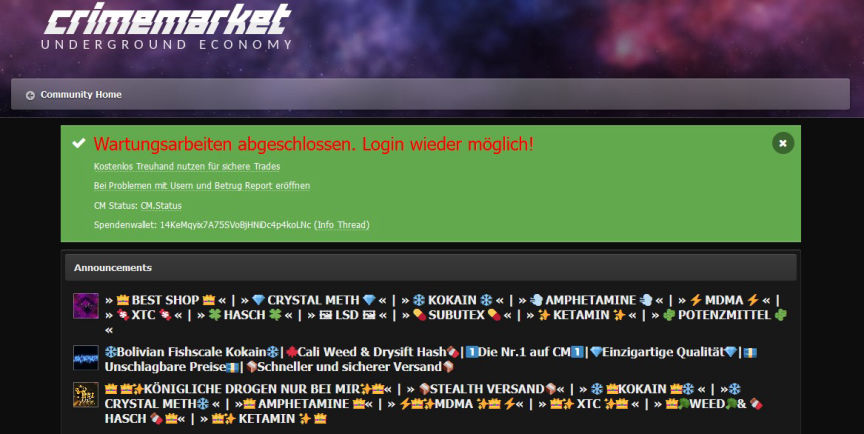
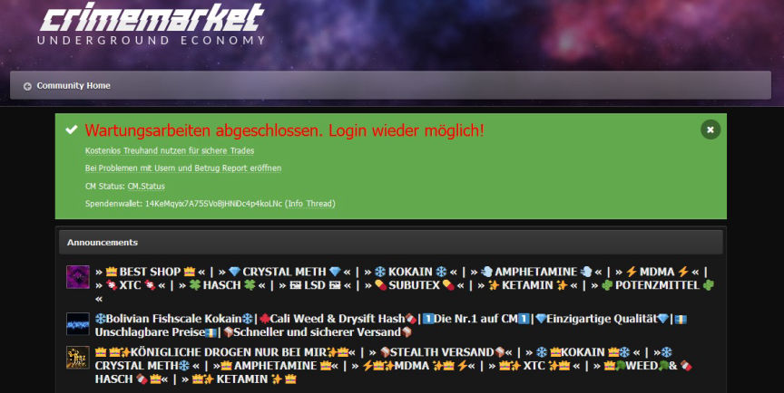

German Forum Crimemarket Seized
Authorities in Germany took over Crimemarket, Germany's largest illicit goods and services trading platform.

Investigations led by the Cologne Public Prosecutor's Office and the Düsseldorf Police Headquarters resulted in the execution of over 100 search warrants in different parts of Germany and the arrest of suspected Crimemarket users.
The Düsseldorf police headquarters launched investigations into Crimemarket in 2020. The investigators established that the forum's users participated in the sale and purchase of drugs and weapons. Illicit services such as the sale of stolen accounts, were also available on the forum. The investigations targeted the forum's 180,000 members.
The investigations culminated with the execution of 102 search warrants nationwide on February 29, 2024. The searches resulted in the seizure of electronic devices and drugs including, 1 kilogram of marijuana and ecstasy tablets. The investigators also seized 600,000 euros in cash and movable assets.
The searches resulted in the arrest and detention of six suspects. The investigations' main suspect, a 23-year-old, was arrested at his home in North Rhine-Westphalia.
The investigators took control of Crimemarket's servers and domain. The investigators kept the site online and turned it into a honeypot.
Investigations aimed at uncovering the forum's admins and users from the data seized by the investigators are ongoing.

Investigations led by the Cologne Public Prosecutor's Office and the Düsseldorf Police Headquarters resulted in the execution of over 100 search warrants in different parts of Germany and the arrest of suspected Crimemarket users.
The Düsseldorf police headquarters launched investigations into Crimemarket in 2020. The investigators established that the forum's users participated in the sale and purchase of drugs and weapons. Illicit services such as the sale of stolen accounts, were also available on the forum. The investigations targeted the forum's 180,000 members.
The investigations culminated with the execution of 102 search warrants nationwide on February 29, 2024. The searches resulted in the seizure of electronic devices and drugs including, 1 kilogram of marijuana and ecstasy tablets. The investigators also seized 600,000 euros in cash and movable assets.
The searches resulted in the arrest and detention of six suspects. The investigations' main suspect, a 23-year-old, was arrested at his home in North Rhine-Westphalia.
The investigators took control of Crimemarket's servers and domain. The investigators kept the site online and turned it into a honeypot.
Investigations aimed at uncovering the forum's admins and users from the data seized by the investigators are ongoing.